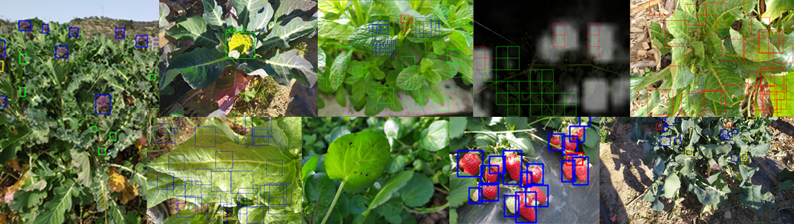

Method of visual detection of plant diseases in landless indoor agriculture environments (MESOI)

Context:
Project of the Research Group on Media Technologies at La Salle - Universitat Ramon Llull where I worked as a research assistant, contributing to its development, discussing results, and writing reports and publications.
Technologies:
Computer Vision, Python, Matlab, Mobile Robotics
Description:
This project consisted in the development of an automated system of surveillance and control of indoor agriculture fields by means of a moving robot with camera and computer vision techniques to detect plant diseases and monitor the fruits of those. A set of photos were taken in nearby fields to create several datasets of labeled images of different plants, some containing diseases, pests and fruits. Those datasets and others obtained from the Internet were used in Deep Learning models of object detection and classification to study the viability of such system. Finally, these models were tested in a simulated field by means of a Turtlebot robot with a camera attached and a Jetson TX1 board.
During this project I had the chance to use Deep Learning techniques related to Computer Vision applied to a real-world problem, as well as using and programming a robot to perform such task. I had also the opportunity to work with biologists and farmers to understand the characteristics of the plants used and how computer science methods could help them.